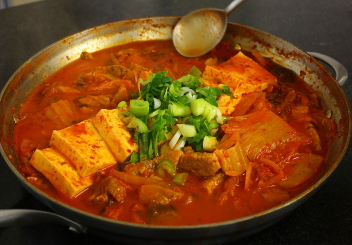

Kimchichigae

Description
Kimchi stew is one of the most-loved of all the stews in Korean cuisine. It’s a warm, hearty, spicy, savory, delicious dish that pretty much everyone loves.
Ingredients
- 1 lb kimchi, cut into bite size pieces
- 1/4 cup kimchi brine
- 1/2 lb bite sized slices of pork shoulder or pork belly (about equal to the amount of kimchi
- 1/2 pkg tofu, sliced
- 2 green onions cut diagnally, 1 green onion cut thinly
- 1 medium white onion, sliced (1 cup)
- 1 tsp salt
- 1 tsp sugar
- 2 tsp Korean hot pepper flakes
- 1 tbsp Korean hot pepper paste
- 1 tsp toasted sesame oil
- 2c anchovy stock or chicken or beef broth
Steps
- Place kimchi and brine in pot. Add pork on top, then white onion and diagnonal green onion slices
- Add salt, sugar, hot pepper flakes, and hot pepper paste. Drizzle sesame oil over top and add the anchovy stock
- Cover and cook for 10 minutes over medium high heat.
- Open and mix in the seasonings with a spoon. Lay the tofu over top.
- Cover and cook another 10 to 15 minutes over medium heat.
- Chop 1 green onion and put it on the top of the stew. Remove from the heat and serve right away with rice.